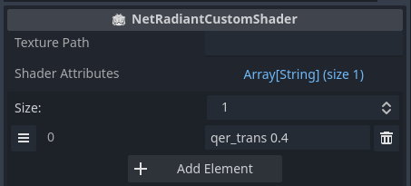

NetRadiant Custom Resources
FuncGodot has limited support for NetRadiant Custom. All standard entity types and shaders are supported. Patches are unsupported at this time, and bit flag key values are restricted to a single spawnflags key. FuncGodot offers two resources to help configure NetRadiant Custom gamepacks.
NetRadiantCustomGamepackConfig

Builds a gamepack for NetRadiant Custom.
| Property | Type | Description |
| Export File | Bool | Button to export / update this gamepack's configuration in the NetRadiant Custom Gamepacks Folder. |
| Gamepack Name | String | Gamepack folder and file name. Must be lower case and must not contain special characters. |
| Game Name | String | Name of the game in NetRadiant Custom's gamepack list. |
| Base Game Path | String | Directory path containing your maps, textures, shaders, etc... relative to your project directory. |
| Fgd File | FuncGodotFGDFile | FGD resource to include with this gamepack. If using multiple FGD resources, this should be the master FGD that contains them in the base_fgd_files resource array. |
| Netradiant Custom Shaders | Array[Resource] | NetRadiantCustomShader resources for shader file generation. |
| Texture Types | PackedStringArray | Supported texture file types. |
| Model Types | PackedStringArray | Supported model file types. |
| Sound Types | PackedStringArray | Supported audio file types. |
| Default Scale | String | Default scale of textures in NetRadiant Custom. |
| Clip Texture | String | Clip texture path that gets applied to weapclip and nodraw shaders. |
| Skip Texture | String | Skip texture path that gets applied to caulk and nodrawnonsolid shaders. |
| Default Build Menu Variables | Dictionary |
Variables to include in the exported gamepack's default_build_menu.xml. Each String key defines a variable name, and its corresponding String value as the literal command-line string to execute in place of this variable identifier. Entries may be referred to by key in default_build_menu_commands values. |
| Default Build Menu Commands | Dictionary |
Commands to include in the exported gamepack's default_build_menu.xml. Keys, specified as a String, define the build option name as you want it to appear in Radiant. Values represent commands taken within each option. They may be either a String or an Array of String elements that will be used as the full command-line text issued by each command within its associated build option key. They may reference entries in default_build_menu_variables by using brackets, eg: [variable_key_name]. |
NetRadiantCustomShader

Resource that gets built into a shader file that applies a special effect to a specified texture in NetRadiant Custom.
| Property | Type | Description |
| Texture Path | String | Path to texture without extension, eg: `textures/special/clip`. |
| Shader Attributes | Array[String] | Array of shader properties to apply to faces using Texture Path. |